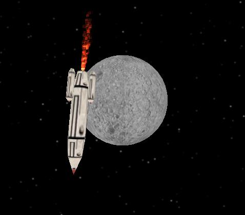
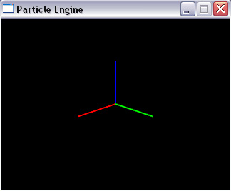
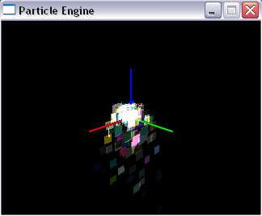

Non, nous n'allons pas faire ici de la physique nucléaire :) ! Ce tuto va essayer de vous faire comprendre le fonctionnement d'un générateur de particules tel qu'on en trouve dans la plupart des jeux 3D.
Oui mais c'est quoi un générateur de particules?
Dans un environnement 3D, on utilise le concept de particule dès qu'on veut reproduire un phénomène physique complexe comme le feu, l'eau, la fumée, le brouillard, etc. Ces phénomènes sont modélisés par un grand nombre de petits objets ayant chacun un comportement autonome. Le générateur de particules est un programme qui va produire ces objets et gérer leur "vie". Comme souvent en 3D si on veut être réaliste, on doit mettre beaucoup de particules (plusieurs dizaine de milliers pour une explosion par exemple)... et forcément on augmente énormément le temps de calcul et les ressources utilisées par le programme. A tel point qu'aujourd'hui les puces 3D de nouvelle génération possèdent des circuits qui gèrent eux-même les particules afin de réduire l'utilisation du processeur.
Mais comment va-t'on gérer 10 000 particules en même temps? Ca a l'air super difficile ton tuto !
Rassurez-vous, nous n'allons pas réécrire le générateur de fumée d'Half-Life :) ! Je vais essayer de vous expliquer le principe de fonctionnement d'un générateur très simple qui peut gérer plusieurs milliers de particules en même temps tout en consommant très peu de ressources.
Sur cet exemple, le générateur est utilisé pour le réacteur de la fusée :

Et de quoi a-t'on besoin pour ce cours ?
La méthode que je présente est très simple et peut être programmée dans n'importe quel langage sachant gérer l'OpenGL mais pour être cohérent avec les cours de M@teo et de Kayl, je l'ai programmé en C. Ce qui veut dire que vous devez avoir suivi tous les tutos de M@teo sur le C/SDL et aussi ceux de Kayl sur l'OpenGL.
Voilà, après cette (longue) introduction, nous pouvons attaquer le tuto :pirate: !
La structure du programme est quasiment la même que celle utilisée par Kayl dans ses tutos, je ne vais donc pas la détailler, je me contente de vous fournir le code.
#include <stdlib.h>
#include <stdio.h>
#include <math.h>
#include <SDL/SDL.h>
#include <GL/gl.h>
#include <GL/glu.h>
/* Attention, j'utilise la bibliothèque de Kayl pour */
/* afficher les axes donc pensez à l'inclure */
#include "sdlglutils.h"
/* CONSTANTES */
#define LARGEUR 640
#define HAUTEUR 480
#define REFRESH_DELAY 20
...
/* FONCTIONS */
double myRand(double min, double max);
void dessinerScene();
...
/* FONCTION PRINCIPALE */
int main(int argc, char *argv[])
{ SDL_Surface *ecran = NULL;
SDL_Event event;
int continuer = 1;
int previousTime = SDL_GetTicks();
int elapsedTime = 0;
/* INITIALISATIONS */
SDL_Init(SDL_INIT_VIDEO); /* Initialisation de la SDL */
SDL_WM_SetCaption("Particle Engine", NULL);
/* Ouverture de la fenêtre */
ecran = SDL_SetVideoMode(LARGEUR, HAUTEUR, 32, SDL_OPENGL);
/* Initialisation du mode 3D */
glMatrixMode( GL_PROJECTION );
glLoadIdentity( );
gluPerspective(70,(double)LARGEUR/HAUTEUR,1,1000);
glEnable(GL_DEPTH_TEST); /* Initialisation du Z-Buffer */
glEnable(GL_BLEND); // Autoriser la transparence
glBlendFunc(GL_SRC_ALPHA,GL_ONE); // Type de transparence
/* Ces 2 lignes améliorent le rendu mais ne sont pas nécessaires */
glHint(GL_PERSPECTIVE_CORRECTION_HINT,GL_NICEST);
glHint(GL_POINT_SMOOTH_HINT,GL_NICEST);
/* On efface le tampon d'affichage */
glClear(GL_COLOR_BUFFER_BIT | GL_DEPTH_BUFFER_BIT);
glFlush();
SDL_GL_SwapBuffers();
...
/* Boucle Générale */
while (continuer)
{ SDL_PollEvent(&event);
switch(event.type)
{ case SDL_QUIT:
continuer = 0;
break;
case SDL_KEYDOWN:
switch(event.key.keysym.sym)
{ case SDLK_ESCAPE:
continuer=0;
break;
default:break;
}
break;
}
/* Appel de la fonction principale de dessin */
dessinerScene();
/* On attend le tour suivant */
elapsedTime = SDL_GetTicks() - previousTime;
if (elapsedTime < REFRESH_DELAY)
{
SDL_Delay(REFRESH_DELAY - elapsedTime);
}
previousTime = SDL_GetTicks();
}
SDL_Quit(); /* Arrêt de la SDL */
return EXIT_SUCCESS; /* Fermeture du programme */
}
/* FONCTIONS SECONDAIRES */
double myRand(double min, double max)
{ return (double) (min + ((float) rand() / RAND_MAX * (max - min + 1.0)));
}
void dessinerScene()
{ /* Initialisation */
glClear(GL_COLOR_BUFFER_BIT | GL_DEPTH_BUFFER_BIT);
glMatrixMode(GL_MODELVIEW);
glLoadIdentity();
/* Position Camera gluLookAt(positionCamera, positionCible, vecteurVertical) */
gluLookAt(2,2,-1, 0,0,0, 0,0,1);
drawAxis(1.0);
/* Dessin */
...
/* MAJ de l'écran */
glFlush();
SDL_GL_SwapBuffers();
}
Normalement vous devez obtenir une fenêtre qui ressemble à ça :

J'ai choisi l'axe Z comme axe vertical parceque j'ai l'habitude comme ça mais rien ne vous interdit de changer. J'ai aussi pour habitude de sortir la fonction de dessin du main() mais là aussi ça n'a pas vraiment d'importance :)
Enfin j'ai rajouté une petite fonction secondaire:
C'est une fonction ultra-simple pour programmeur paresseux :-° qui renvoie un nombre aléatoire compris entre min et max. On en aura besoin plus tard.
Maintenant qu'on à un squelette correct on va pouvoir remplir les pointillés ;)
Définition des particules
On va commencer par définir le nombre total de particules que le générateur devra gérer. Pour l'instant, on va se contenter de 1000 objets. Il faut donc rajouter la ligne suivante dans le code:
#define MAX_PARTICLES 1000
Maintenant qu'on sait combien on en veut, il va falloir expliquer au programme ce que c'est qu'une particule. Pour cela nous allons définir une structure "particles" qui contiendra 7 paramètres:
typedef struct // Création de la structure
{ bool active; // Active (1=Oui/0=Non)
double life; // Durée de vie
double fade; // Vitesse de disparition
double r, g, b; // Valeurs RGB pour la couleur
double x, y, z; // Position
double xi, yi, zi; // Vecteur de déplacement
double xg, yg, zg; // Gravité
}particles;
Cette structure définit l'état d'une particule à un instant donné. Son "état de santé" et représenté par un taux de transparence (le paramètre life). Une particule "meurt" quand elle devient totalement transparente. Le paramètre fade représentent la quantité de "vie" que la particule va perdre à la prochaine itération de la boucle principale du programme. Les vecteurs position et déplacement représente où est la particule et de combien elle va bouger. Quand au vecteur gravité il va venir perturber le mouvement pour le rendre plus réaliste (du genre si vous codez une fontaine, ça serait bien si l'eau retombait vers le sol, non ? ^^ ).
Enfin, il faut réserver la mémoire dont on aura besoin pour stocker tous ces objets. Pour cela on construit un tableau de taille MAX_PARTICLES et du type particles défini précédemment.
/* Tableau de stockage des particules */
particles particle[MAX_PARTICLES];
Bon, on en a fini avec les déclarations, il ne reste plus qu'à coder le générateur o_O .
Si vous avez bien compris la structure précédente, vous devez avoir une idée du fonctionnement de ce générateur (enfin j'espère :) )On a des variables qui décrivent l'état actuel, et des variables qui décrivent comment cet état va être modifié au tour suivant. Le générateur va donc être composé de deux éléments :
Une fonction d'initialisation qui met en place les particules.
Une fonction de "suivi" qui réactualise l'état des particules à chaque tour.
1 - La fonction d'initialisation: initParticles()
Cette fonction va définir l'état de chaque particule lors du lancement du programme et ne servira qu'une fois. Elle doit donc se trouver avant la boucle générale.
int initParticles()
{ for(int i=0; i<MAX_PARTICLES; i++) // Boucle sur toutes les particules
{ particle[i].active = true; // On rend la particule active
particle[i].life = 1.0; // Maximum de vie
particle[i].fade = myRand(0.01,0.05); // Vitesse de disparition aléatoire
particle[i].r=myRand(0.0,1.0); // Quantité aléatoire de Rouge
particle[i].g=myRand(0.0,1.0); // Quantité aléatoire de Vert
particle[i].b=myRand(0.0,1.0); // Quantité aléatoire de Bleu
particle[i].xi = myRand(-10.0,10.0); // Vitesse aléatoire
particle[i].yi = myRand(-10.0,10.0);
particle[i].zi = myRand(10.0,20.0);
particle[i].xg = 0.0; // Gravité dirigée selon l'axe -Z
particle[i].yg = 0.0;
particle[i].zg = -1.0;
}
return 0; // Initialisation OK
}
J'ai décidé de modéliser une sorte de fontaine donc la vitesse est plus forte selon la direction verticale pour représenter le fait que les particules sont projetées vers le haut.
Une fois que cette fonction est définie, n'oubliez pas de la rajouter dans les déclarations au début du programme.
int initParticles();
2 - La fonction de suivi: dessinerParticules()
C'est la fonction la plus importante de ce tuto et aussi la plus difficile à écrire mais rassurez-vous, on va y aller tranquillement.
Cette fonction va être appelée à chaque tour de la boucle générale et elle doit être placée dans la fonction dessinerScene() que nous avons écrite au début de ce tuto.
Voici un petit résumé ce qu'elle doit faire pour chaque particule:
afficher l'état actuel
modifier les valeurs pour passer à l'état suivant
(régénérer les particules "mortes")
La troisième action est optionnelle; tout dépend de ce que vous voulez modéliser. Si c'est une explosion, vous n'avez pas besoin de régénérer les particules, alors que c'est indispensable dans le cas d'un phénomène continu.
Passons au code:
int dessinerParticules()
{ for(int i=0; i<MAX_PARTICLES; i++) // Pour chaque particule
{ if(particle[i].active) // Si elle est active
{ float x = particle[i].x; // On récupère sa position
float y = particle[i].y;
float z = particle[i].z;
/* Couleur de la particule; transparence = vie */
glColor4d(particle[i].r, particle[i].g, particle[i].b, particle[i].life);
/* Dessin de carrés à partir de deux triangles (plus rapide pour la carte video */
glBegin(GL_TRIANGLE_STRIP);
glVertex3d(x+0.1,y,z+0.1); // Nord-Ouest
glVertex3d(x-0.1,y,z+0.1); // Nord-Est
glVertex3d(x+0.1,y,z-0.1); // Sud-Ouest
glVertex3d(x-0.1,y,z-0.1); // Sud-Est
glEnd();
/* Déplacement */
particle[i].x += particle[i].xi/1000;
particle[i].y += particle[i].yi/1000;
particle[i].z += particle[i].zi/1000;
/* Gravité */
particle[i].xi += particle[i].xg;
particle[i].yi += particle[i].yg;
particle[i].zi += particle[i].zg;
/* "Vie" */
particle[i].life -= particle[i].fade;
/* Si la particule est "morte" on la régénère */
if (particle[i].life < 0.0)
{ particle[i].life = 1.0; // Maximum de vie
particle[i].fade = myRand(0.01,0.05);
particle[i].x = 0.0; // On renvoie la particule au centre
particle[i].y = 0.0;
particle[i].z = 0.0;
particle[i].xi = myRand(-10.0,10.0); // Vitesse aléatoire
particle[i].yi = myRand(-10.0,10.0);
particle[i].zi = myRand(10.0,20.0);
particle[i].r=myRand(0.0,1.0); // Quantité aléatoire de Rouge
particle[i].g=myRand(0.0,1.0); // Quantité aléatoire de Vert
particle[i].b=myRand(0.0,1.0); // Quantité aléatoire de Bleu
}
}
}
return 0; // Dessin OK
}
Là encore, n'oubliez pas de rajouter cette fonction dans vos déclarations:
int dessinerParticules();
Une petite compilation et voici le résultat :

Voilà, le code est assez commenté pour que vous puissiez suivre mais je vais quand même ajouter quelques précisions. J'ai représenté les particules par des carrés. Bien évidemment vous pouvez utiliser n'importe quelle forme... tout dépend de votre carte graphique :) En effet, les performances de ce code ne dépendent que de deux paramètres : le nombre de particules et leur forme. En particulier, les cartes graphiques sont optimisées pour dessiner plus facilement des triangles. C'est pour cela que même si mes particules sont carrées, je les ai décomposées en 2 triangles qui seront dessinés plus rapidement qu'un carré.
Vous pouvez aussi remarquer que les vitesses définies lors de l'initialisation et la régénération sont les mêmes. Si vous choisissez des vitesses plus grandes lors de l'initialisation, vous obtiendrez un effet d'explosion assez réaliste.
A vous maintenant d'adapter ce code en fonction de vos besoins. Tout est modulable, et rien ne vous empêche d'inventer de nouveaux paramètres pour les particules ou de gérer leurs collisions (mais là c'est une autre paire de manches !). Par exemple pour la demo d'une fusée tournant autour de la Lune (à télécharger à la fin du tuto) je n'ai pas attribué de couleur aux particules mais plutôt une texture de feu pour évoquer les flammes qui sortent du réacteur.
Pour utiliser ce code, rappelez-vous seulement ces deux points importants :
la fonction initParticles() doit être appelée avant la boucle principale,
la fonction dessinerParticules() dessine à partir du point de coordonnées (0,0,0) donc pensez à bien faire vos transformations de repère avant de l'utiliser
Bon codage et n'hésitez pas à me poser des questions si certains points ne sont pas clairs ;)